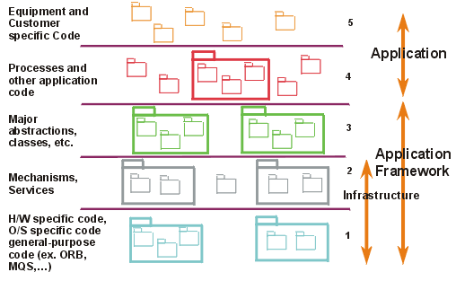
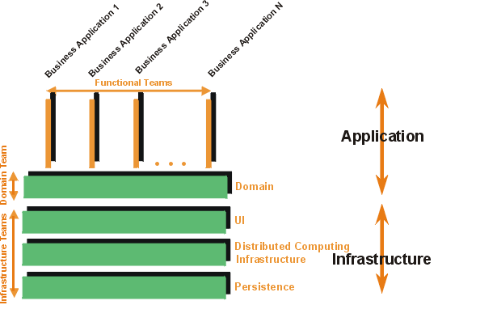

Concepts:
Software Architecture
Topics
Software architecture is a concept that is easy to understand, and that most
engineers intuitively feel, especially with a little experience, but it is hard
to define precisely. In particular, it is difficult to draw a sharp line between
design and architecture—architecture is one aspect of design that concentrates
on some specific features.
In An Introduction to Software Architecture, David Garlan and
Mary Shaw suggest that software architecture is a level of design concerned with
issues: "Beyond the algorithms and data structures of the computation;
designing and specifying the overall system structure emerges as a new kind of
problem. Structural issues include gross organization and global control
structure; protocols for communication, synchronization, and data access;
assignment of functionality to design elements; physical distribution;
composition of design elements; scaling and performance; and selection among
design alternatives." [GAR93]
But there is more to architecture than just structure; the IEEE Working Group
on Architecture defines it as "the highest-level concept of a system in
its environment" [IEEE98].
It also encompasses the "fit" with system integrity, with economical
constraints, with aesthetic concerns, and with style. It is not limited to an
inward focus, but takes into consideration the system as a whole in its user
environment and its development environment - an outward focus.
In the RUP, the architecture of a software system (at a
given point) is the organization or structure of the system's significant
components interacting through interfaces, with components composed of
successively smaller components and interfaces.
To speak and reason about software architecture, you must first define an
architectural representation, a way of describing important aspects of an
architecture. In the RUP, this description is captured in
the Software Architecture Document.
We have chosen to represent software architecture in multiple architectural
views. Each architectural view addresses some specific set of concerns,
specific to stakeholders in the development process: end users, designers,
managers, system engineers, maintainers, and so on.
The views capture the major structural design decisions by showing how the
software architecture is decomposed into components,
and how components are connected by connectors to produce
useful forms [PW92].
These design choices must be tied to the requirements,
functional, and supplementary, and other constraints. But these choices in turn
put further constraints on the requirements and on future
design decisions at a lower level.
Architecture is represented by a number of different architectural views,
which in their essence are extracts illustrating the "architecturally
significant" elements of the models. In the RUP, you
start from a typical set of views, called the "4+1 view model" [KRU95].
It is composed of:
- The Use-Case View,
which contains use cases and scenarios that encompasses architecturally
significant behavior, classes, or technical risks. It is a subset of the use-case
model.
- The Logical View, which
contains the most important design
classes and their organization into packages
and subsystems, and the
organization of these packages and subsystems into layers.
It contains also some use case
realizations. It is a subset of the design
model.
- The Implementation View,
which contains an overview of the implementation
model and its organization in terms of modules into packages and layers.
The allocation of packages and classes (from the Logical View) to the
packages and modules of the Implementation View is also described. It is a
subset of the implementation model.
- The Process View, which
contains the description of the tasks (process and threads) involved, their
interactions and configurations, and the allocation of design objects and
classes to tasks. This view need only be used if the system has a
significant degree of concurrency. In RUP, it is a subset of the design
model.
- The Deployment View, which
contains the description of the various physical nodes for the most typical
platform configurations, and the allocation of tasks (from the Process View)
to the physical nodes. This view need only be used if the system is
distributed. It is a subset of the deployment
model.
The architectural views are documented in a Software
Architecture Document. You can envision additional views to express
different special concerns: user-interface view, security view, data view, and
so on. For simple systems, you may omit some of the views contained in the 4+1
view model.
Although the views above could represent the whole design of a system, the
architecture concerns itself only with some specific aspects:
- The structure of the model — the organizational patterns,
for example, layering.
- The essential elements — critical use
cases, main classes, common
mechanisms, and so on, as opposed to all the elements present in the model.
- A few key scenarios showing the main control flows
throughout the system.
- The services, to capture modularity, optional features,
product-line aspects.
In essence, architectural views are abstractions, or
simplifications, of the entire design, in which important characteristics are
made more visible by leaving details aside. These characteristics are important
when reasoning about
- System evolution—going to the next development cycle.
- Reuse of the architecture, or parts of it, in the context of a product
line.
- Assessment of supplementary qualities, such as performance, availability,
portability, and safety.
- Assignment of development work to teams or subcontractors.
- Decisions about including off-the-shelf components.
- Insertion in a wider system.
Architectural
patterns are ready-made forms that solve recurring architectural
problems. An architectural framework or an architectural
infrastructure (middleware) is a set of components on which you can
build a certain kind of architecture. Many of the major architectural
difficulties should be resolved in the framework or in the infrastructure,
usually targeted to a specific domain: command and control, MIS, control system,
and so on.
Examples of Architectural Patterns
[BUS96] groups architectural patterns
according to the characteristics of the systems in which they are most
applicable, with one category dealing with more general structuring issues. The
table shows the categories presented in [BUS96]
and the patterns they contain.
| Category |
Pattern |
| Structure |
Layers |
| Pipes and Filters |
| Blackboard |
| Distributed Systems |
Broker |
| Interactive Systems |
Model-View-Controller |
| Presentation-Abstraction-Control |
| Adaptable Systems |
Reflection |
| Microkernel |
Two of these are presented in more detail here, to clarify these ideas; for a
complete treatment see [BUS96]. Patterns
are presented in the following widely used form:
- Pattern name
- Context
- Problem
- Forces describing different problem aspects that should be considered
- Solution
- Rationale
- Resulting context
- Examples
Pattern Name
Layers
Context
A large system that requires decomposition.
Problem
A system which must handle issues at different levels of
abstraction. For example: hardware
control issues, common services issues and domain-specific issues. It would be
extremely undesirable to write vertical components that handle issues at all
levels. The same issue would have to be handled (possibly inconsistently)
multiple times in different components.
Forces
- Parts of the system should be
replaceable
- Changes in components should not
ripple
- Similar responsibilities should be
grouped together
- Size of components—complex
components may have to be decomposed
Solution
Structure the systems into groups of components that form
layers on top of each other. Make upper layers use services of the layers below
only (never above). Try not to use services other than those of the layer
directly below (don’t skip layers unless intermediate layers would only add
pass-through components).
Examples:
1. Generic Layers

A strict layered architecture states that
design elements (classes, components, packages, subsystems) only use the
services of the layer below them. Services can include event-handling,
error-handling, database access, and so forth.
It
contains more palpable mechanisms, as opposed to raw operating system level
calls documented in the bottom layer.
2. Business System Layers

The above diagram shows another layering
example, where there are vertical application-specific layers, and horizontal,
infrastructure layers. Note that the goal is to have very short business “stovepipes”
and to leverage commonality across applications.
If not, you may have multiple people solving the same problem,
potentially differently.
See
Guidelines: Layering for more discussion on this pattern.
Pattern Name
Blackboard
Context
A domain in which no closed (algorithmic)
approach to solving a problem is known or feasible. Examples are AI systems,
voice recognition, and surveillance systems.
Problem
Multiple problem-solving agents (knowledge
agents) must cooperate to solve a problem that cannot be solved by any of the
individual agents. The results of the work of the individual agents must be
accessible to all the other agents so they can evaluate whether they can
contribute to finding a solution and post results of their work.
Forces
-
Sequence in which knowledge agents can
contribute to solving the problem is not deterministic and may depend on
problem solving strategies
-
Input from different agents (results or
partial solutions) may have different representations
-
Agents do not know of each other's
existence directly but can evaluate each other's posted contributions
Solution
A number of Knowledge Agents have access to a
shared data store called the Blackboard. The blackboard provides an interface to
inspect and update its content. The Control module/object activates the agents
following some strategy. Upon activation an agent inspects that blackboard to
see if it can contribute to solving the problem. If the agent determines that it
can contribute, the control object can allow the agents to put its partial (or
final) solution on the board.
Example:

This shows the structural or static view modeled using UML.
This would be part of a parameterized collaboration, which is then bound to
actual parameters to instantiate the pattern.
A software architecture, or only an architectural view, may have an attribute
called architectural style, which reduces the set of possible
forms to choose from, and imposes a certain degree of uniformity to the
architecture. The style may be defined by a set of patterns, or by the choice of
specific components or connectors as the basic building blocks. For a given
system, some of the style can be captured as part of the architectural
description in an architecture style guide—part of a design
guidelines document in the RUP. Style plays a major
part in the understandability and integrity of the architecture.
The graphical depiction of an architectural view is called an architectural
blueprint. For the various views described above, the blueprints are
composed of the following diagrams from the Unified Modeling Language [UML99]:
- Logical view. Class diagrams,
state machines, and object diagrams
- Process view. Class diagrams
and object diagrams (encompassing task—processes and threads)
- Implementation view.
Component diagrams
- Deployment view. Deployment
diagrams
- Use-case view.
Use-case diagrams depicting use cases, actors, and ordinary design classes;
sequence diagrams depicting design objects and their collaboration
In the RUP, the architecture is primarily an outcome of
the analysis & design workflow. As the project
reenacts this workflow, iteration after iteration, the architecture evolves,
refined, and polished. As each iteration includes integration and test, the
architecture is quite robust by the time the product is delivered. This
architecture is a main focus of the iterations of the elaboration
phase, at the end of which the architecture is normally baselined.
Copyright
© 1987 - 2001 Rational Software Corporation
| |

|
 Disciplines >
Disciplines >
 Analysis & Design >
Analysis & Design >
 Concepts >
Concepts >